Putting the Robot's Brain on the Edge — The Memory Budget: Perception and Motion on One 16 GB Jetson¶
Field Notes · The Memory Budget. Until now perception and motion were tested separately. The 16GB correction checked whether FoundationPose alone fits in 16 GB; The Simulators checked how long cuMotion and the UR driver hold up. A real cell runs both: the camera finds the part pose, and the arm plans and moves to it. So we put both on one Jetson and ran them for hours.
The short answer: one 16 GB box is tight. With continuous tracking, memory ran out in about an hour. But the culprit wasn't the one we expected, and changing how perception is used made a big difference.
(R&D on the same Jetson Orin NX 16GB as the earlier posts. The camera and perception were real, tracking a mini PC on a desk. The robot was URSim (a UR12e simulator); no real robot moved.)
30-second summary¶
- On a Jetson, CPU and GPU share one pool of memory. What the GPU holds can't be swapped out, so a full pool can freeze the whole Jetson. The tests stopped themselves when available memory fell below 1 GB.
- Motion alone was fine for 7.6 hours. 98.2 % success, 12 ms replies with no drift, about 4.1 GB in total.
- With perception added and continuous tracking, it stopped after 26 minutes. In a dark office, 0.93 GB was left. The biggest block was the FoundationPose container (6.7 GB per Docker).
- Leaner settings bought 1 h 10 min. The cuMotion settings save 1.3 GB with motion alone, but alongside perception cuMotion already sits near 2.5 GB, so they made little difference. All 8 CPU cores were saturated for the hour.
- Taking one pose per cycle held for 24 hours. 2,398 of 2,399 poses succeeded, about 4 s each, including 15.5 hours after the lights went off. Perception and motion peaks take turns instead of overlapping. But the lowest free memory was 1.18 GB, less than 0.2 GB above the 1 GB warning line. Run again the same way after the Jetson had been up for 9 days, it reached the stop line in 3 hours. Perception had been piling up memory over hours, and restarting perception alone gave 2.4 GB back.
- Idle threads were burning the CPU. Putting spinning threads to sleep and feeding cuMotion joint states at 50 Hz took the load average from about 7 to 2–3 and no-plan over the box from 16 % to 6–9 %. A back-to-back comparison, 4 hours each under the same conditions, gave 12.9 % against 6.2 %. With retries added, the failures that remained fell to 0.7 % of cycles. Memory didn't shrink.
- The UR driver didn't die from link drops. It was a ROS 2 Humble action-handling crash. Resending fewer motion goals made it rarer, but the watchdog is still a must. Restarts that hung were fixed by moving the driver to UDP.
- A real cell wouldn't put it all on one 16 GB box. Split it across two Jetsons, use a bigger Jetson (AGX Orin 32/64 GB), slim perception down, or design for one pose per cycle. Loading cuMotion only for fault recovery leaves about 7.5 GB free on one 16 GB box in normal running.
Why memory first¶
A regular PC has RAM for the CPU and separate memory on the graphics card, and when RAM runs short it can swap to disk. A Jetson is different: CPU and GPU share one pool. The 16 GB module reports about 15.3 GB in total, and the OS, cameras, neural networks and path planning all have to fit in it.
The catch is that memory the GPU holds can't be swapped out. This Jetson had 7.8 GB of compressed swap (zram), and the tests barely touched it. When the pool fills, things don't just slow down; the whole Jetson can freeze. So every test ran with a watchdog: below 1.5 GB available it logs a warning, and below 1 GB it stops the test and cuMotion to protect the Jetson. From the one-pose-per-cycle run on, the rule changed slightly: below 1 GB it checks every 5 seconds, and below 0.8 GB it stops.
How the test worked¶
The robot side reused the soak test from The Simulators. One long-lived client repeats a cycle:
- Pilz PTP to the home pose
- cuMotion 50 cm over a box
- Pilz LIN 10 cm down and back up
- cuMotion back
A cycle takes 30 to 50 seconds. Every step logs success, reply time and planning time, and every container's memory and CPU are logged each minute.
The perception side is the chain built up to Tuning. From the OAK-D camera, Grounding DINO finds the object, SAM2 cuts the mask, ESS computes depth, and FoundationPose estimates and tracks the 6-DoF pose. It runs in two containers: one for FoundationPose, one for camera, detection, segmentation and depth.
Who uses how much of the 16 GB¶

| Block | Memory | Note |
|---|---|---|
| FoundationPose container | 5.5 → 6.7–7.0 GB (per Docker) | drops 0.5–1.0 GB within a minute, then climbs back over 2–3 minutes; its GPU allocation stays flat at 4.08 GB |
| Camera, detection, segmentation, depth | about 3.2–3.4 GB | nearly constant |
| cuMotion | motion only: 2.4 → 3.8 GB; with perception: 2.0–2.6 GB | a cache, not a leak; grows less alongside perception |
| Driver, MoveIt, test client | about 0.3 GB | nearly constant |
| OS and other | about 1.3–1.7 GB | the rest |
Add it up and a little over 1 GB of the 15.3 GB is left. Motion alone used about 4.1 GB, so perception takes more than twice that. The per-container numbers come from Docker, which inflates the FoundationPose side (more below), but the free memory reported by the OS really was just over 1 GB.
cuMotion rose from 2.4 to 3.8 GB in the first hour and then stayed there for hours. That's not a leak: it's PyTorch holding on to GPU memory to reuse it. But it doesn't come down while idle either (3.75 → 3.71 GB over 30 idle minutes), and only a process restart releases it. So budget about 4 GB for cuMotion.
Yet in all three runs alongside perception, cuMotion with default settings stayed within 2.0–2.6 GB, including the 24-hour run. Whether it caches less when memory is tight, we haven't confirmed.
How long each run lasted¶
| Run | Conditions | Result |
|---|---|---|
| Motion only | no perception | 98.2 % of 3,961 steps over 7.6 h, 12 ms replies with no drift. Ended by choice once the numbers stopped changing |
| Continuous tracking | dark office, default settings | 1.4 GB free after 20 minutes, stopped at 26 min with 0.93 GB. Tracking 6.8 → 4.5 fps, cuMotion planning 1.3 → 2.0 s |
| Continuous tracking, leaner settings | dark office | stopped at 1 h 10 min with 0.88 GB. 588 of 625 steps OK |
| One pose per cycle | lit for the first 8.5 h, then dark for 15.5 h; default settings | the full 24 h. Lowest available 1.18 GB, median 1.29 GB |
The dark office wasn't planned. The tests ran into the night, the lights went off, and the mean image brightness fell to 19 out of 255. The object sat at the edge of the frame, so it was lost and re-found often. We treated those two runs as the worst case and kept going. The one-pose-per-cycle run also went dark, 8.5 hours in, and stayed dark all night.
It didn't stop because of cuMotion¶
At first we suspected cuMotion. With motion alone, it was the thing whose memory grew the most. But in the runs with perception, cuMotion was at 2.51 GB (26 min) and 2.42 GB (1 h 10 min) when they stopped. What pulled free memory down to the floor was perception, and its biggest piece is the FoundationPose container.
FoundationPose does two jobs. When it first finds an object, it generates hundreds of pose hypotheses and scores them all at once (registration); after that, it nudges the previous frame's pose (tracking). Registration is heavy: here each one took about 2.8 to 3 seconds.
In the leaner-settings run that stopped at 1 h 10 min, Docker showed this container's memory dropping 0.5 to 1.0 GB within a minute and climbing back over 2 to 3 minutes, again and again (the sawtooth in the chart). Read that number with care. When CPU and GPU share memory, as on a Jetson, Docker's per-container numbers are inflated. The one-pose-per-cycle run logged GPU allocations (nvmap) separately, and FoundationPose's GPU memory stayed at 4.08 GB through hundreds of registrations. What moved was outside the GPU allocation. It wasn't imaginary, though: when the Docker number rose by 1 GB, the free memory reported by the OS fell by about 0.5 GB. Exactly what moves, we don't know yet. The GPU allocation doesn't leak: over the 24-hour run it stayed at 4.08–4.11 GB, and the lowest free memory sat near 1.2 GB from hour 2 to the end without sinking further. In the 12-hour run covered below, though, this container's memory outside the GPU allocation crept up about 70 MB an hour overnight. A cell left on for days should watch that number.
In short: perception already takes close to 10 GB, leaving a little over 1 GB, and when the swing lands on top, the floor is crossed. In the dark office, 30 to 50 % of the time went to re-finding the object. Re-acquiring less is the first remedy to try, but we haven't confirmed that registration is what drives the swing.
Trimming the settings¶
The same dark conditions, rerun with leaner settings:
| Change | Effect | Cost |
|---|---|---|
| Desktop off (headless) | +0.2 GB available | small, because no desktop session was logged in; access over SSH only |
| ESS light | depth 64–70 → 45 ms | slightly lower depth quality |
| Fewer cuMotion seeds + PyTorch cache cleanup | flat at 2.33 GB, planning 2.0 → 1.4 s. With motion alone that's about 1.3 GB less than 3.8 GB; alongside perception, a little over 0.1 GB | 24 % no-plan over the box (8 % with motion alone) |
With motion alone, the cuMotion settings pay off: memory that climbed to 3.8 GB stops at 2.33 GB. But alongside perception cuMotion already sits near 2.5 GB with defaults, so this run saved a little over 0.1 GB. Why the run went from 26 minutes to 1 h 10 min is one of two things: small savings adding up (desktop off, +0.2 GB), or the big swings landing at different times. One run each can't tell them apart. What's clear is that it stopped for the same reason, perception's memory. The settings can delay the crossing; they didn't prevent it.
Two more things showed up besides memory:
- The CPU was saturated for the whole hour. Load average on the 8-core Jetson was above 8, against 2.5 for motion alone.
- The UR driver's link dropped 31 times an hour. No move failed, and it reconnected between moves, but on a real robot that number can't be ignored. The UR driver has to answer the robot every 2 ms, and the Jetson's Linux isn't a real-time kernel, so a busy CPU delays the reply. The driver also died outright once (the watchdog brought it back in 32 seconds). That was a different problem from the link drops, covered below.
There are candidates on the perception side too. Turning off the front/back check should roughly halve registrations (at the risk of 180° flips on symmetric parts); calling an object lost only after several bad frames in a row should cut re-acquisitions; and not loading unused detection models should free an estimated 0.5 to 1 GB. These are estimates we haven't measured yet. None of them fixes the link drops. CPU saturation gets its own section below.
One pose per cycle¶
Think about a real cell again: few of them need the part pose every instant. The part stops on the conveyor, you look once, and you go pick it at that pose. So the test client changed: at the start of each cycle it turns perception on, takes one pose, turns perception off, then plans and moves.
Now perception's peak (registration) and motion's peak (planning) take turns. The pose is taken while the arm stands still, and perception rests while the arm moves. Every cycle starts with a registration, and memory still holds.
| Item | Result (24 h, October 5 11:00 → October 6 11:00) |
|---|---|
| Pose | 2,398 of 2,399 succeeded, median 3.9 s, 95 % within 4.8 s; the one failure was a 30 s timeout |
| Available memory | lowest 1.18 GB (3 a.m., in the dark), median 1.29 GB; never below 1 GB |
| Motion steps | 95.8 % OK; 96.2 % excluding the PC reboot and the simulator move; 16 % no-plan over the box |
| UR driver | died 4 times (see "Why the UR driver died" below); the watchdog brought it back in about 30 s each time; no deaths in the last 12.5 h |
| Wrist-clamping protective stops (C403) | 0 (the three-layer fix from The Simulators, unchanged) |
| CPU load average | about 6.9 (8 cores); around 7.5 after 11 p.m. |
Free memory moved up and down the whole time, but the floor held. From hour 2 to the end, the lowest value in each hour stayed between 1.18 and 1.25 GB, and FoundationPose's GPU allocation stayed at 4.08–4.11 GB. In the lit daytime hours it swung between 1.2 and 2.0 GB; at night it sat near 1.25 GB.
About 8.5 hours in, the office lights went off: the same kind of dark office at night in which the two continuous-tracking runs hit the memory floor. Even so, every one of the 1,538 poses in the remaining 15.5 hours succeeded. So lighting alone can't explain why it held: in the same darkness, continuous tracking stopped after about an hour, while one pose per cycle lasted to the end. It wasn't a controlled comparison (conditions such as the object's position weren't held fixed), so how much of the difference is down to the mode we can't say.
That doesn't make one 16 GB box enough. At the tightest moment, 1.18 GB was free, less than 0.2 GB above the 1 GB stop line. One more model, or nvblox, could push it over. For a cell where the part doesn't move during the cycle, the mode is realistic; for a production cell, we'd pair it with a Jetson that has room to spare, like an AGX Orin 32 GB.
The open issues are clear too. A 16 % no-plan rate is about twice the 8 % with motion alone. Both runs used cuMotion's default settings, so the settings aren't the cause; fewer seeds to save memory were used only in the leaner-settings run above, which was worse still at 24 %. It was 17 % in the light and 15 % in the dark, so lighting doesn't seem to matter. Most of it was CPU load, covered in the next section. The test client counts a cycle as failed at the first failure and doesn't retry, so 448 of 2,399 cycles (about one in five) were logged as failed. 375 of those were no-plan, and the count includes failures when the simulator's PC rebooted and when the simulator moved to another PC. A real cell must have retries and a fallback for a failed plan (a Pilz straight-line move or a taught path).
Idle threads were burning the CPU¶
A load average of 6.9 was odd. In this mode perception rests while the arm moves, yet the 8 cores were nearly full. Per process, things that should have been idle were using the CPU.
- The perception front end (camera, detection, segmentation, depth) used 112–129 % CPU, more than a whole core. Idle OpenMP threads kept spinning instead of sleeping (busy-waiting), PyTorch held 8 threads, and even at rest it undistorted, drew and JPEG-encoded every frame.
- cuMotion used 66–73 %. It took the robot's joint states (
/joint_states) at the full 500 Hz, far more often than planning needs.
So two things changed. The front end lets OpenMP threads sleep while waiting (OMP_WAIT_POLICY=PASSIVE), runs PyTorch on 2 threads, and refreshes its preview only twice a second while idle. cuMotion gets joint states thinned to 50 Hz, and its collision-sphere update drops from 100 to 10 Hz. One hour in the same one-pose-per-cycle mode:
| 24 h run | after the fix (1 h) | |
|---|---|---|
| front-end CPU | 112–129 % | 37 % |
| cuMotion CPU | 66–73 % | 42 % |
| load average (8 cores) | 5.5–7.6 | 1.9 |
| no-plan over the box | 16 % (12.8 % in the first hour) | 6.1 % |
| plan time median / p95 | 1.48 / 8.7 s | 1.14 / 4.5 s |
| motion steps OK | 96.2 % | 98.8 % |
An hour is short, so the same setup ran another 12 hours (evening of October 6 to the next morning). Over 8 dark overnight hours with the viewer bridge off, no-plan was 8.5 %, moving between 4 and 12 % by hour with no upward trend. Motion steps were 98.5 % OK, and all 816 poses in the dark succeeded. That is clearly below the 24-hour run's 16 % and close to motion alone (8 %).
A further 14-hour run held no-plan steady at about 7 %. By hour it swung from 0 to 14 %, but statistically that is chance, and failures didn't bunch together (3 back-to-back failures vs 6.7 expected by chance). Restarting cuMotion alone changed nothing (5.4 % → 5.1 %). Every cycle asks the same question and the planner occasionally finds no answer, so a real cell has to catch that with retries and a fallback path. With about 100 plans an hour, a single hour at 12–13 % is noise. Heat wasn't the cause either: 53–57 °C against a 99 °C trip, and the CPU clock never dropped.
Up to here the conditions differed from the 24-hour run, though. During that run the simulator moved to another PC, and viewer bridges were on for part of it. So we ran the stock and fixed settings back to back under the same conditions, 4 hours each (October 8).
| stock settings (4 h) | fixed settings (4 h) | |
|---|---|---|
| no-plan over the box | 12.9 % (51 of 395) | 6.2 % (24 of 384) |
| plan time p95 | 9.3 s | 5.4 s |
| load average (8 cores) | 5.2 | about 2.4 |
The failures halved, and the difference is hard to put down to chance (p = 0.002). But two things were fixed (the front end's threads, and the joint states fed to cuMotion), and this test can't say how much each one did. That night a comparison with only the joint-state change switched off and on, about 3 hours each, gave 9.3 % (26 of 281) and 6.4 % (16 of 249), which at these counts can't be told from chance (the planning time limit also differed, 5 s and 10 s). So the conclusion for now is to keep both on.
The same night showed what the remaining 6 % is. cuMotion fails in its last trajectory-optimization step (FINETUNE_TRAJOPT_FAIL); it isn't running into the planning time limit. With a 5 s limit the failed plans took 10–12 s, and with the limit raised to 10 s they ended sooner, in 5–7 s. cuMotion doesn't stop at the limit in this step, and how long a failure takes follows how free the CPU is. More time won't fix it; asking again after a failure will.
So the test client now asks again, up to three times, when a plan fails. Over 1.5 hours and 144 cycles there were 8 planning failures, and every one was solved by a retry. One cycle failed (0.7 %), and that one was a failed move right after start-up, not a planning failure. Before the retries, about 7 % of cycles failed.
Memory didn't shrink. Saving CPU doesn't create memory. In fact the 12-hour run's lowest free memory was 0.87 GB, lower than the 24-hour run's 1.18 GB. A freshly started stack fell to about 0.95 GB free within its first two hours: the OS file cache was evicted from 2.0 to 0.6 GB, and the FoundationPose container's memory outside the GPU allocation rose from 5.4 to 6.5 GB. It never reached the 0.8 GB stop line, but the case for 32 GB in a real cell only got stronger.
Later runs did reach the stop line. On the night of October 8, two runs in the same mode fell below 0.8 GB and stopped after 3.0 and 2.6 hours, on the same setup that had held for 24 hours. The logs show free memory dropping to 0.7–0.9 GB for a few seconds and then coming back, something the 24-hour run never did. It isn't a leak (it recovers in seconds), and the GPU allocation at those moments was the same as usual.
What had changed was the state of the Jetson. It had been up for 9 days, the perception process had been running for 5 days and was about 0.3 GB bigger than at the start, and it had been in use all day before the runs. After a reboot, two one-hour runs never went below 1.78 GB free. We also suspected the short-lived check processes the watchdog starts every 30 seconds, but runs with them on and off were identical. A further 10 hours (two 5-hour runs) on a Jetson that had been rebooted 3.5 hours earlier bottomed out at 1.11 GB and 1.25 GB free and never went below 1 GB.
At that point we concluded that no process was leaking, because the per-process memory figures hadn't grown in 10 hours. That was wrong. In the next run free memory was down to 1.03–1.14 GB after 2 hours and falling by about 0.1 GB an hour, and restarting perception alone gave back 2.4 GB (1.14 → 3.55 GB). The long-running perception stack had been piling up memory over hours. Because the Jetson's CPU and GPU share memory, that share didn't show in the per-process figures, and only partly in Docker's. Which part does the piling up hasn't been found yet; the GPU cache on the FoundationPose side is the suspect.
So the 24-hour result shouldn't be read as "fine to leave on for days". On a single 16 GB box, restarting the perception process on a schedule is a requirement, not an option. Restarting perception alone took 69 seconds, and it now happens automatically once a day in the early morning and every 6 hours during long runs (skipped while a move is running). A restart has to bring back the whole configuration. The first version of the script restored only the CAD model and left the text prompt that names the object at its default, so every pose request failed until the prompt was sent again.
Why the UR driver died¶
In the 24-hour run the UR driver died 4 times. At first it looked like the robot data link (RTDE) dropping, since the link went down every time. The driver log told a different story: all 7 watchdog restarts from October 5 to 7 were preceded by the same error.
Taking data from action server but no ready event
That is a crash in ROS 2 Humble's action handling (rclcpp_action). The driver process aborted within seconds of receiving a new motion goal, and the link drop was the result. The candidate fixes are fewer goal sends and cancels, or an rclcpp or driver build with the bug fixed. Until then the watchdog is a must. Counted over two days of driver logs, it happened 8 times in 16,192 motion goals, about once per 2,000. The failing code is not in the UR driver itself but inside ROS 2's multi-threaded executor.
Restarting turned out to be tricky too. In the 12-hour run a restarted driver came up with only some of its controllers and stalled: the process was alive, but no joint states came out. Every cycle failed for 1 h 45 min. So the watchdog no longer checks only the process. It checks that fresh joint states actually arrive and that every expected controller is active. For the remaining 11 hours of the run the driver never died.
We also found a way to make the crash itself rarer. The test client used to resend the robot program after every planning failure, and each resend reconnected the control link and toggled the controllers. Now a planning failure just ends the cycle, and the program is resent only after a failed move. Over about 14 hours the driver then died only twice, where the old rate of one every 3 to 4 hours would have meant 3 to 5. One more run is needed to confirm it, but stirring the goals less looks like the right direction. The watchdog now also waits up to 60 seconds for every controller of a restarted driver to come up, and the last crash was fully recovered in 28 seconds. In this run cycles were 92–94 % OK, motion steps about 98.5 %, and poses 100 %.
Waiting 60 seconds still didn't cover every case. When we killed the driver on purpose while the test client was sending requests, about one restart in three or four came up with controllers missing. The process that starts the controllers was stuck creating its shared-memory connection in the ROS 2 middleware (FastDDS), while another process started at the same instant finished in under a second. With only the driver container switched from shared memory to UDP, 8 kills out of 8 under the same load recovered with nothing to repair (5 of 8 before the change). In the 10-hour run that followed, the driver crashed for real 3 times, and each time it was back with every controller in about 30 seconds. Not one restart came up incomplete.
In a real cell¶
The conclusion from these tests: motion plus continuous tracking on one 16 GB Orin NX doesn't survive bad conditions. Settings delayed it but didn't prevent it. Designing a real cell, pick from five options:
- Two Jetsons. One for perception, one for motion. They stop stealing each other's memory and CPU; the pose goes over the network.
- A bigger Jetson. Put the same stack on an AGX Orin 32 GB or 64 GB. Price and power go up.
- Lighter perception. A detector trained on the part instead of Grounding DINO, load only the models in use, fewer re-acquisitions, better lighting. This ties back to the "lowest step that solves it" principle in Start Here. Swapping the detector alone should save about 0.5 GB: on the same Jetson, NVIDIA's RT-DETR-family detector (SyntheticaDETR) took about 0.6 GB, and Grounding DINO's engine alone is four times larger. Combined with one pose per cycle, that would widen the 16 GB box's margin from 0.2 GB to around 0.7 GB, enough to make a one-box setup worth considering. It isn't a measured side-by-side yet, so it needs a multi-day test.
- One pose per cycle. The cheapest fix for cells where the part sits still, and it held for 24 hours, through a dark night. The cycle gets longer by the pose time (about 4 s), and nothing that changes during the motion is seen. On 16 GB the margin is under 0.2 GB, so it's safer combined with option 2.
- cuMotion only after a fault. The normal cycle runs on fixed paths (Pilz joint and straight-line moves) with cuMotion unloaded, which leaves about 7.5 GB free. Only when the arm stops in an unexpected pose is perception unloaded and cuMotion loaded to plan the way home. In the simulator, from 6 random fault poses, fault to home took 38–40 s (about 20 s of it is cuMotion starting up), and all 6 planned on the first try. Free memory during recovery was 10.6–11.2 GB. For a cell whose obstacles don't change from cycle to cycle, that gives one 16 GB box plenty of room. It has only been checked in the simulator, not yet on a real robot.
Whichever you pick, a few things come with it:
- A driver watchdog. The UR control node doesn't come back on its own when it dies. After a restart, check that joint states actually arrive and every controller is active. If restarts sometimes hang, look at the ROS 2 shared-memory transport first.
- No idle threads burning the CPU. Check the OpenMP wait policy, PyTorch thread count and topic rates first.
- A real-time kernel and dedicated CPU cores for the UR driver. A busy CPU delays the 2 ms reply.
- Retries and a fallback path for no-plan.
- A multi-day test under the worst conditions. Here too, the problem showed up in the dark at night, not in daylight. A few demos won't show it.
Also, nvblox (the live obstacle map) wasn't running in these tests. cuMotion doesn't strictly need it. If everything in the cell stays in the same place, obstacles entered up front (boxes, meshes) are enough, and these tests used just a floor slab and a box. A cell that must avoid a person's hand or objects that change every time does need nvblox. Measured on its own, a desk-sized scene at 2 cm cells added 0.3–0.5 GB, nearly all of what the detector swap saves. The bigger cost is that depth has to keep running while the arm moves, which removes the point of one pose per cycle: perception and motion peaks no longer take turns. For such a cell, an AGX Orin 32 GB or two Jetsons is the right call.
Later we ran nvblox only during the fault recovery of option 5. A real object (a mini PC) was placed in the middle of the recovery path and seen by the real camera. The plan made without the map went straight through where the object stood (computed clearance 7 mm); the plan made with the map went around it at 145 mm. Fault to home took about 60 s. With a map and an object, though, planning often didn't succeed in one request: 10 of 20 with default settings and 14 of 20 with a wider search, so retries are needed here too. Fixtures that are always in the same place are better entered up front as boxes than left to the map (doing so took the clearance to a fixture from 0 to 136 mm). And in a 1-hour run with a lighter detector plus nvblox, median free memory was 2.0 GB, close to the original stack's 2.1 GB. The estimate that nvblox spends what the detector swap saves held up.
What others have found¶
We found no published data that logs memory while running FoundationPose, cuMotion and the UR driver together on one Jetson for hours. NVIDIA publishes throughput and latency, not memory for several models running together over time.
The closest is a 2026 paper from UC Berkeley and Microsoft, "Offload or Overload". Running a mobile manipulator's full workload (perception, mapping, a learned policy and more) plus the OS needed about 50 GB, so it couldn't all run at once on a 32 GB AGX Orin. The same learned policy (π0.5) had 440 ms latency and 30 % success on the AGX Orin, against 144 ms and 80 % on the larger Jetson Thor. The scale differs, but the conclusion points the same way: whether everything fits on one edge computer is settled by a memory budget and a soak test, not a demo.
Wrap-up¶
| Checked | Result | Gotcha |
|---|---|---|
| Motion only | 7.6 h, 98.2 %, about 4.1 GB | cuMotion's cache isn't released when idle → budget about 4 GB |
| Continuous tracking, dark | memory floor at 26 min | perception about 10 GB, the FoundationPose container swinging; cuMotion 2.5 GB |
| Leaner settings | 1 h 10 min; alongside perception the cuMotion saving is a little over 0.1 GB | CPU saturated, 24 % no-plan, 31 link drops per hour |
| One pose per cycle | 24 h, poses 2,398/2,399, about 4 s; held through a dark night | lowest free 1.18 GB (under 0.2 GB margin); after 9 days of uptime, the stop line in about 3 h; perception piles up memory (a restart gives 2.4 GB back) → restart it on a schedule. 16 % no-plan, 4 driver restarts |
| CPU cleanup | load average about 7 → 2–3, no-plan 16 % → 6–9 % (same-conditions comparison 12.9 % → 6.2 %), motion steps 98.5–98.8 % | memory unchanged (12 h low 0.87 GB); the remaining 6 % is a cuMotion optimization failure; with retries, 0.7 % of cycles failed |
| A real cell | two Jetsons, AGX Orin 32/64 GB, lighter perception, one pose per cycle, cuMotion only after a fault (about 7.5 GB free in normal running) | driver watchdog, idle-thread cleanup, real-time kernel, retries, long tests in bad conditions |
- A working demo isn't a working cell. This stack had no trouble in a few-minute demo either.
- Budget memory for the peak, not the average. What overflowed was the top of the swing, not the average.
- Don't trust Docker numbers alone. On a Jetson, log GPU allocations (nvmap) and the OS's free memory together to see what really uses memory. Flat per-process figures weren't proof either; how much comes back after a restart was the surest check. And don't predict the combined case from motion-only numbers; cuMotion showed why.
- How you use perception matters as much as the hardware. Watching continuously or looking once per cycle decides the memory and CPU picture.
- When the CPU is busy, look at what should be idle first. High load didn't mean lots of work. Waiting threads were spinning.
Glossary¶
- Unified memory: CPU and GPU share the same memory, as on a Jetson
- Swap (zram): moving less-used memory elsewhere (disk or compressed memory) when memory runs short. It can't be used for what the GPU holds
- Soak test: repeating the same work for hours or days to see whether anything slows down or leaks
- Registration and tracking: FoundationPose's step that scores many pose hypotheses at once when it first finds an object (registration), and the step that nudges the previous frame's pose afterwards (tracking)
- Cache: memory held for reuse. Unlike a leak, it levels off
- nvmap: the Jetson driver that manages memory allocated for the GPU; its records show each process's GPU allocation
- Load average: the average number of tasks running or waiting to run. Equal to the core count means the CPU is full
- Busy-wait: waiting by checking over and over instead of sleeping, which keeps a CPU core busy with nothing to do
- OpenMP: a library that spreads computation across CPU cores; PyTorch and others use it inside
- Real-time kernel: a Linux kernel built to answer within a fixed time, used for programs like robot drivers that must reply every few ms
- Headless: running without a screen (desktop)
- nvblox: an NVIDIA library that builds a live obstacle map from camera depth
Series · ← Previous: Isaac Sim — a virtual work cell on an RTX 3090 PC and a cloud GPU